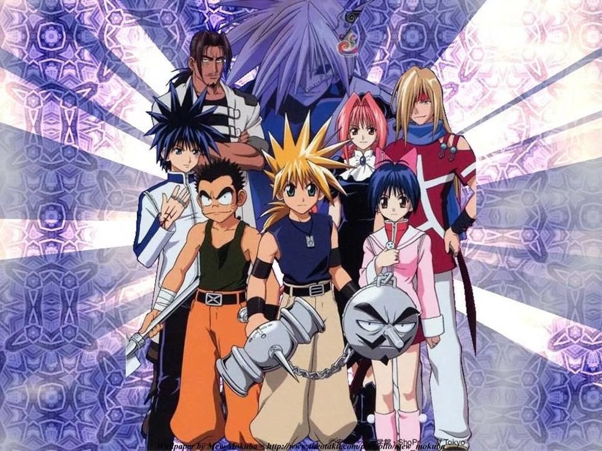

MÄR
一早起身，百无聊赖，想找着就把魔兵传奇最后一集看完吧，于是，便成了二一年第一部补完嘅动画。
犹记得第一次睇魔兵传奇，约莫是小学五年级。嗰阵星空台首播，守喺电视机前准时收看，睇完之后，都觉得几好睇。第二日翻学校同同学讲起，讨论甚是热烈。自此，每晚都准时菢喺电视机前，一集都唔错过，即使有日去咗同学屋企玩，亦要够钟就开定电视睇，真系忠实番薯1嚟噶。每当剧中出现重要嘅专有名词，就会用张纸记低，（都几似小学生会做嘅嘢。。。）因此到依家剧中嘅名都依然朗朗上口。课余时间，仲同同学自研手势游戏，咩十三图腾柱、小雪人啊，都系极之开心。后来，星空台好似播到打完魅影之后，就冇继续播了。 （星空台就呢样唔好，虎头蛇尾，记得海贼王又系播完恐怖三桅帆船就冇了，搞到要走去补漫画。。。。。。）

后来，大概十年后，无意中喺乙站2揾到全套剧集，当年嘅回忆瞬间飙晒出嚟，梗系第一时间储起佢啦。之后系陆陆续续啖补。大二暑假得闲，就从魅影篇开始，一集集看。揾到嘅系国语版，不过冇字幕，就好似做听力啖，总有一两个字听唔清。不过国语配音好有当年嘅感觉，虽然当年有字幕，但呢部系为数不多 嘅我愿意睇配音版而唔系原版嘅动画，可能系习惯咗。
大三开学，各种事务变得繁忙，于是便断了补完。日日忙到死，终于挨到赶完截3考完试，转眼就来到年底，

很快，一集一集地过，转眼就看到最后一集。 （虽然途中刀咗好多人，不过按热血动画嘅套路，最后肯定会翻生嘅。（不过。。。。此处点名藤本树4，我的精神病人。 ）不过安西信行5最尾好似癫咗啖搏命刀人，感觉有啲无谓。 ）同样地，时间也来到二〇年最后一日。站在年末，回望这一年，确实是不尽如人意的一年。选择了活在当下的我，也不作多想，转头便投入梦乡。翌日，依依不舍地打开最后一集，好似十年来的回忆都即将画下句号般。最后一集，其实并非第一次看了，早在六年级还是初中，我就到土豆搜了最后一集来看，但当时跳过了很大一部分，最后也看了个茫茫然，唔知点解最尾主角穿越翻现实世界。后来，同人讨论个阵，仲被人话系咪年代太耐记懵咗。其实年代系一个原因，另外直接跳最尾一集都有关系。 （话说我当年睇嘢，无论系动画定漫画，钟意睇第一集同埋最尾一集，就当睇完。。。可能当年冇咁多零用钱，至作出嘅最经济决定。）因此，现在看最后一集，当年看最尾一集嘅残存回忆也陆续浮现在脑海中，一切的剧情都拼接成一条完整的珠链，这种时空交错的忆记，真系好难得。最尾，主角回到了自己的世界，异世界也恢复了和平，大团圆结局。不过，桃乐丝，我当年最喜欢的角色，经历过重重挫折，只能遗憾地对主角道出心声，却孤单地留在异世界，都系觉得好可惜。当年会觉得这样的结局并不好，但现在再回头细看，最刻骨铭心的永不会是大团圆的完美结局，而是悲剧的力量才更令人惋惜铭记。终究，他们不是同一个世界的人。结局，纵有遗憾，亦是注定的合乎情理。
后记
好耐冇写过日记，上一篇都好似系初中嗰阵了。虽然当年桥桥 6十分热闹，但如今相比之下也冷清不少，毕竟桥桥已是上个年代的产物。至于为什么要以日记的形式发表，我想，如果当年的我，大概会以这样的形式将它记录下来。